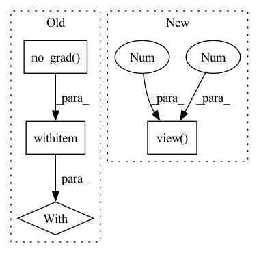

Pattern ID :506

Before Change
p.requires_grad = False
def forward(self, x):
with torch.no_grad():
return self.sobel(x)
class Laplacian(nn.Module):
After Change
def forward(self, x):
x = self.sobel(x)
if self.use_threshold:
x_thr = torch.quantile(
x.view(x.size(0), 1, -1), 0.80, dim=2).view(x.size(0), 1, 1, 1)
x[x < x_thr] = 0.
return x
In pattern: SUPERPATTERN
Frequency: 3
Non-data size: 4
Instances
Fragment ID: 1753214
Project Name: westlake-ai/openmixup
Commit Name: 1969d56d997a214a2d5f909c64998f458d2009b1
Time: 2022-04-25
Author: 1070535169@qq.com
File Name: openmixup/models/utils/sobel.py
M Class Name: Sobel
N Class Name: Sobel
M Method Name: forward(2)
N Method Name: forward(2)
M Parent Class: nn.Module
N Parent Class: nn.Module
M File Name: openmixup/models/utils/sobel.py
N File Name: openmixup/models/utils/sobel.py
M Start Line: 32
M End Line: 36
N Start Line: 45
N End Line: 51
'>
Before Change
p.requires_grad = False
def forward(self, x):
with torch.no_grad():
return self.laplacian(x)
After Change
def forward(self, x):
x = self.laplacian(x)
if self.use_threshold:
x_thr = torch.quantile(
x.view(x.size(0), 1, -1), 0.80, dim=2).view(x.size(0), 1, 1, 1)
x[x < x_thr] = 0.
return x
'>
Fragment ID: 1753213
Project Name: westlake-ai/openmixup
Commit Name: 1969d56d997a214a2d5f909c64998f458d2009b1
Time: 2022-04-25
Author: 1070535169@qq.com
File Name: openmixup/models/utils/sobel.py
M Class Name: Laplacian
N Class Name: Laplacian
M Method Name: forward(2)
N Method Name: forward(2)
M Parent Class: nn.Module
N Parent Class: nn.Module
M File Name: openmixup/models/utils/sobel.py
N File Name: openmixup/models/utils/sobel.py
M Start Line: 65
M End Line: 66
N Start Line: 94
N End Line: 100
'>
Before Change
cos_theta = torch.mm(embbedings, kernel_norm).clamp(
-1, 1
) // for numerical stability
with torch.no_grad():
origin_cos = cos_theta.clone()
target_logit = cos_theta[torch.arange(0, embbedings.size(0)), label].view(-1, 1)
sin_theta = torch.sqrt(1.0 - torch.pow(target_logit, 2))
After Change
if is_half:
cos_theta_m = cos_theta_m.half()
index = torch.zeros_like(cos_theta)
index.scatter_(1, label.data.view(-1, 1), 1)
index = index.byte().bool()
output = cos_theta * 1.0
output[index] = cos_theta_m[index]
'>
Fragment ID: 1753218
Project Name: cavalleria/cavaface
Commit Name: 98a21048f5dce435a6639a288dafc4c6be61be05
Time: 2021-08-25
Author: 605370459@qq.com
File Name: head/metrics.py
M Class Name: ArcFace
N Class Name: ArcFace
M Method Name: forward(3)
N Method Name: forward(3)
M Parent Class: nn.Module
N Parent Class: nn.Module
M File Name: head/metrics.py
N File Name: head/metrics.py
M Start Line: 81
M End Line: 103
N Start Line: 67
N End Line: 86